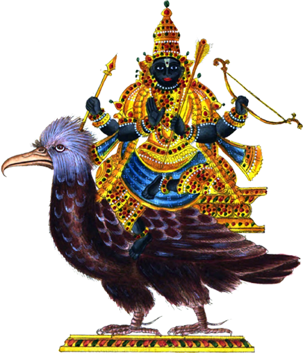

॥ शनैश्चरस्तोत्रम् ॥

श्रीगणेशाय नमः ।
अस्य श्रीशनैश्चरस्तोत्रस्य । दशरथ ऋषिः ।
शनैश्चरो देवता । त्रिष्टुप् छन्दः ।
शनैश्चरप्रीत्यर्थ जपे विनियोगः ॥
दशरथ उवाच ।
कोणोऽन्तको रौद्रयमोऽथ बभ्रुः कृष्णः शनिः पिंगलमन्दसौरिः ।
नित्यं स्मृतो यो हरते च पीडां तस्मै नमः श्रीरविनन्दनाय ॥ १ ॥
सुरासुराः किंपुरुषोरगेन्द्रा गन्धर्वविद्याधरपन्नगाश्च ।
पीड्यन्ति सर्वे विषमस्थितेन तस्मै नमः श्रीरविनन्दनाय ॥ २ ॥
नरा नरेन्द्राः पशवो मृगेन्द्रा वन्याश्च ये कीटपतंगभृङ्गाः ।
पीड्यन्ति सर्वे विषमस्थितेन तस्मै नमः श्रीरविनन्दनाय ॥ ३ ॥
देशाश्च दुर्गाणि वनानि यत्र सेनानिवेशाः पुरपत्तनानि ।
पीड्यन्ति सर्वे विषमस्थितेन तस्मै नमः श्रीरविनन्दनाय ॥ ४ ॥
तिलैर्यवैर्माषगुडान्नदानैर्लोहेन नीलाम्बरदानतो वा ।
प्रीणाति मन्त्रैर्निजवासरे च तस्मै नमः श्रीरविनन्दनाय ॥ ५ ॥
प्रयागकूले यमुनातटे च सरस्वतीपुण्यजले गुहायाम् ।
यो योगिनां ध्यानगतोऽपि सूक्ष्मस्तस्मै नमः श्रीरविनन्दनाय ॥ ६ ॥
अन्यप्रदेशात्स्वगृहं प्रविष्टस्तदीयवारे स नरः सुखी स्यात् ।
गृहाद् गतो यो न पुनः प्रयाति तस्मै नमः श्रीरविनन्दनाय ॥ ७ ॥
स्रष्टा स्वयंभूर्भुवनत्रयस्य त्राता हरीशो हरते पिनाकी ।
एकस्त्रिधा ऋग्यजुःसाममूर्तिस्तस्मै नमः श्रीरविनन्दनाय ॥ ८ ॥
शन्यष्टकं यः प्रयतः प्रभाते नित्यं सुपुत्रैः पशुबान्धवैश्च ।
पठेत्तु सौख्यं भुवि भोगयुक्तः प्राप्नोति निर्वाणपदं तदन्ते ॥ ९ ॥
कोणस्थः पिङ्गलो बभ्रुः कृष्णो रौद्रोऽन्तको यमः ।
सौरिः शनैश्चरो मन्दः पिप्पलादेन संस्तुतः ॥ १० ॥
एतानि दश नामानि प्रातरुत्थाय यः पठेत् ।
शनैश्चरकृता पीडा न कदाचिद्भविष्यति ॥ ११ ॥
इति श्रीब्रह्माण्डपुराणे श्रीशनैश्चरस्तोत्रं सम्पूर्णम् ॥
.. ш́анаиш́чарастотрам ..
ш́рӣган̣эш́а̄йа намах̣ ..
асйа ш́рӣш́анаиш́чарастотрасйа . даш́аратха р̣ших̣ .
ш́анаиш́чаро дэвата̄ . тришт̣уп чхандах̣ .
ш́анаиш́чарапрӣтйартха джапэ винийогах̣ ..
даш́аратха ува̄ча ..
кон̣о'нтако раудрайамо'тха бабхрух̣ кр̣шн̣ах̣ ш́аних̣ пим̣галамандасаурих̣ .
нитйам̣ смр̣то йо харатэ ча пӣд̣а̄м̣ тасмаи намах̣ ш́рӣравинандана̄йа .. 1 ..
сура̄сура̄х̣ ким̣пурушорагэндра̄ гандхарвавидйа̄дхарапаннага̄ш́ча .
пӣд̣йанти сарвэ вишамастхитэна тасмаи намах̣ ш́рӣравинандана̄йа .. 2 ..
нара̄ нарэндра̄х̣ паш́аво мр̣гэндра̄ ванйа̄ш́ча йэ кӣт̣апатам̣габхр̣н̇га̄х̣ .
пӣд̣йанти сарвэ вишамастхитэна тасмаи намах̣ ш́рӣравинандана̄йа .. 3 ..
дэш́а̄ш́ча дурга̄н̣и вана̄ни йатра сэна̄нивэш́а̄х̣ пурапаттана̄ни .
пӣд̣йанти сарвэ вишамастхитэна тасмаи намах̣ ш́рӣравинандана̄йа .. 4 ..
тилаирйаваирма̄шагуд̣а̄ннада̄наирлохэна нӣла̄мбарада̄нато ва̄ .
прӣн̣а̄ти мантраирниджава̄сарэ ча тасмаи намах̣ ш́рӣравинандана̄йа .. 5 ..
прайа̄гакӯлэ йамуна̄тат̣э ча сарасватӣпун̣йаджалэ гуха̄йа̄м .
йо йогина̄м̣ дхйа̄нагато'пи сӯкшмастасмаи намах̣ ш́рӣравинандана̄йа .. 6 ..
анйапрадэш́а̄тсвагр̣хам̣ правишт̣астадӣйава̄рэ са нарах̣ сукхӣ сйа̄т .
гр̣ха̄д гато йо на пунах̣ прайа̄ти тасмаи намах̣ ш́рӣравинандана̄йа .. 7 ..
срашт̣а̄ свайам̣бхӯрбхуванатрайасйа тра̄та̄ харӣш́о харатэ пина̄кӣ .
экастридха̄ р̣гйаджух̣са̄мамӯртистасмаи намах̣ ш́рӣравинандана̄йа .. 8 ..
ш́анйашт̣акам̣ йах̣ прайатах̣ прабха̄тэ нитйам̣ супутраих̣ паш́уба̄ндхаваиш́ча .
пат̣хэтту саукхйам̣ бхуви бхогайуктах̣ пра̄пноти нирва̄н̣ападам̣ тадантэ .. 9 ..
кон̣астхах̣ пин̇гало бабхрух̣ кр̣шн̣о раудро'нтако йамах̣ .
саурих̣ ш́анаиш́чаро мандах̣ пиппала̄дэна сам̣стутах̣ .. 10 ..
эта̄ни даш́а на̄ма̄ни пра̄таруттха̄йа йах̣ пат̣хэт .
ш́анаиш́чаракр̣та̄ пӣд̣а̄ на када̄чидбхавишйати .. 11 ..
ити ш́рӣбрахма̄н̣д̣апура̄н̣э ш́рӣш́анаиш́чарастотрам̣ сампӯрн̣ам ..
Одной из лучших молитв которая существует для умиротворения Шани – это Шани Стотра составленная царём Дашартхой. Читают и слушают её в субботу – день Шани. Кто читает эту стотру, сидя под священным фикусом или старым массивным деревом, – получит милость Сатурна. Кто орошает дерево после заката Солнца, жертвует чёрный горох, железо, горчичное, растительное масло и черный кунжут – обретёт милость Сатурна. Кто отдаёт чёрную, тёмно-синюю одежду бедным, старикам, убогим – получит милость Сатурна в период Шани Махадашы, Антарадашы и в Саде Сати. Человек, повторяющий эту стотру по субботам, не будет знать горя и бедности.
Приветствие Шри Ганеше!
Эта стотра составлена Дашаратхой, мудрецом среди царей, в размере триштуп, её божеством, силой и объектом является Шани Дев.
Дашаратха сказал:
Я приветствую сына бога Солнца, того кто хромает, ежедневно памятуя о ком решаются все проблемы. Очень злого, но держащим себя под контролем. Имеющим волосы льва, кто тёмного и медного цвета, медленно движущегося, сына бога Солнца, разрушающего невзгоды. (1)
Я приветствую сына бога Солнца, создающему трудности при плохом положении, кого боятся все дэвы, асуры, великие люди, наги, гандхарвы, видьядхары и могущественные змеи. (2)
Я приветствую сына бога Солнца, кто при плохом положении создаёт проблемы мужчинам, королям, коровам, львам и всем животным в лесу, насекомым, бабочкам и пчёлам. (3)
Я приветствую сына бога Солнца, кто при плохом положении создаёт проблемы странам, дремучим лесам, а также в фортах, армейских палатках и городах. (4)
Я приветствую сына бога Солнца, кто получает радость, если жертвовать кунжутное масло, ячмень, пальмовый рис, железо или синие и черные одежды, почитать его и воспевать эту стотру по субботам. (5)
Я приветствую сына бога Солнца, живущему в Прайаге, у берегов Ямуны и Сарасвати, в пещерах и пребывающему в медитации великих мудрецов в своей тонкой форме. (6)
Я приветствую сына бога Солнца! Если в субботу, человек достигает своего дома, то он становится очень счастливым. Если он покидает свой дом в этот день, то станет победителем, обретёт свою цель и не будет снова и снова путешествовать. (7)
Я приветствую сына бога Солнца, кто как Брахма создаёт, как Вишну заботится, как Шива разрушает три мира, и кто распространяется, как Риг, Яджур и Самаведы. (8)
Читающий с преданностью, для удовлетворения Шани этот гимн, обретёт хороших детей, коров, у него будут хорошие отношения с родствениками, он насладится всеми удовольствиями жизни, и обретёт духовное знание и просветление в конце. (9)
Слава пребывающему в треугольнике, с телом медного цвета и гривой льва, чёрного цвета, очень злому, разрушающему, контролирующему чувства, сыну бога Солнца, движущемуся медленно и рывками, воспетому в стихах Пиппалы! Воспевающий по утрам эти девять строф распрощается со всеми проблемами и станет необычайно счастлив. (10-11)
Такова Шришанайшчара Стотра из Шрибрахманда Пураны.